Last update : 2026/6/25; Status: editing, @updating, final
“三下乡”社会实践活动是青年学子深入基层、服务社会的重要途径，其核心在于将文化、科技、卫生的种子播撒到祖国的广袤大地，促进城乡协同发展，助力乡村振兴。本次中国科学技术大学少年班学院暑期新疆三下乡社会实践活动，以“青春为中国式现代化挺膺担当”为核心主题，通过在塔城的实地走访、调研服务、科普宣传等系列活动，将所学知识与边疆发展需求相结合，用青春力量为中国式现代化建设贡献一份力量。
塔城启实践，戍边精神传
正值暑期，我们中国科学技术大学少年班学院的师生们怀揣着服务边疆的赤诚之心，踏上了新疆塔城这片热土。7月14日上午，满载着队员们青春梦想和蓬勃朝气的大巴缓缓驶入塔城市委党校，庄严的“为人民服务”在阳光下熠熠生辉，诉说着这片土地上无数建设者的奉献故事。这一刻，我们深深感受到肩上的责任与使命，一场跨越千里的青春之约就此展开。
在塔城"三下乡"实践活动启动会上，塔城市张志书记以饱满的热情主持了会议。会场内，来自中科大的师生、领导和塔城地区的领导共同见证这个意义非凡的时刻。 吴秋琼团长的详细介绍让我们对这片土地有了更深刻的认识。她向我们介绍道：“塔城作为多民族聚居区，生活着汉族、哈萨克族、回族等29个民族；同时，塔城地区位于新疆北部，地处我国西北边陲，与哈萨克斯坦接壤，边境线绵长，区位优势显著，是‘一带一路’建设的重要节点。”
中国科学技术大学团委副书记刘珊珊的讲话对实践活动做出了具体要求和期望。她强调，本次三下乡活动要充分发挥科大学子的专业优势，以“科”字为引领，重点开展科普宣讲、科技服务等共五项特色服务。队伍指导老师潘磊带领大家学习了习近平总书记给谢依特小学戍边支教西部计划志愿者服务队队员的回信精神。徐晶芝书记对本次三下乡活动提出了具体的安全要求和殷切期望。学生代表李冰宰代表全队郑重承诺，严格遵守各项规定和要求，实事求是、脚踏实地地完成各项任务。
授旗仪式上，校旗在掌声中交接，象征着科技服务边疆的接力棒正在传递！
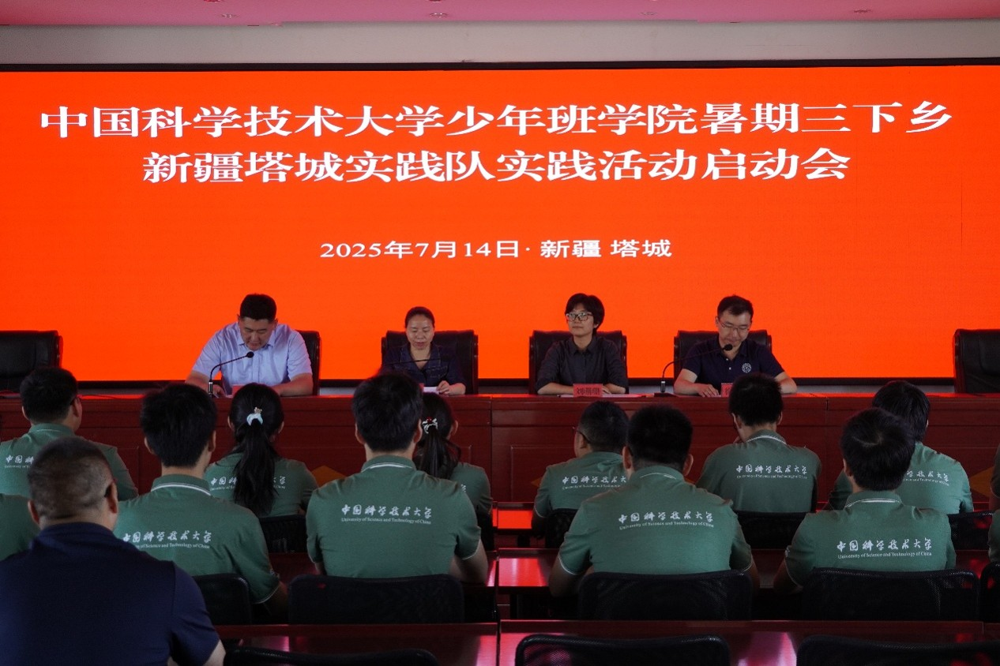
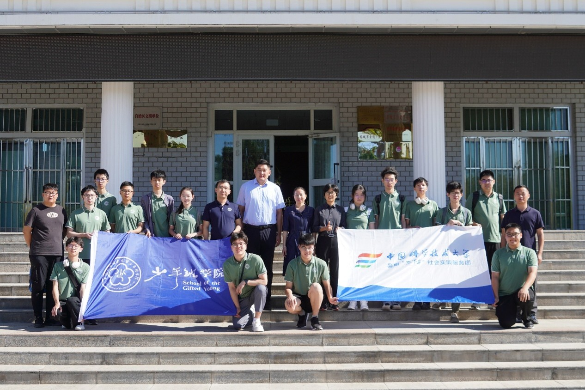
启动会结束后，望着塔城湛蓝的天空，我们在市委党校门口面向国旗合影留念。接下来实践活动中，我们将深入乡村牧区、走进企业学校，把科大创新精神播撒在天山脚下，让青春之花在祖国最需要的地方绚丽绽放。我们必将牢记总书记嘱托，坚定理想信念，厚植家国情怀，练就过硬本领，发扬奋斗精神，到祖国和人民最需要的地方贡献青春力量。这次塔城之行，必将成为我们人生中最宝贵的记忆，也必将为塔城发展注入新活力。
哨所凝忠魂，民俗展风情
7月14日下午，实践队从裕民县出发前往魏德友爱国主义教育基地。魏德友自1964年来到萨尔布拉克草原边境农场（现农九师白杨市一六一团一连）开始，就一直坚持巡边放牧六十载，被誉为边境线上的“活界碑”。魏德友老同志曾获得“七一勋章”、时代楷模、全国道德模范、最美奋斗者等荣誉。
首先，我们参观了魏德友戍边事迹展览馆。这里陈列了许多魏德友曾经戍边时使用的物品，并介绍了他的很多英雄事迹。不论刮风还是下雨，酷暑还是寒冬，魏德友六十年如一日地坚守在这里，坚守对党的承诺。他“守住这里就是我的心愿”的朴实愿望，以及他与夫人刘景好之间深厚的感情，都让我们深受触动。展览生动呈现了魏德友忠于使命、为国守边的感人事迹和崇高品格，激励广大干部群众传承弘扬热爱祖国、无私奉献、艰苦创业、开拓进取的兵团精神。
参观完展览馆后，我们来到魏德友老夫妇家中与他们交流。他的家里陈设非常简单，除了基本家具以外，墙上还挂着不少他的照片。魏德友老夫妇非常热情好客且平易近人，身体也很硬朗，虽然已经年过八旬，但他们仍然拿出好几大盘西瓜和自制小零食热情的招待了我们。在与魏德友老人的进一步交流中，眼前这对精神矍铄的夫妻在我们心中的形象更加生动。魏德友认真地和我们分享他们在这片荒芜的土地上打下水井，在狼群威胁下放牧，以及冬天冰雪肆虐时在艰难的条件下坚持在这里生活等种种艰苦奋斗的经历。一番亲切的交流下来，我们更加深入了解了他守边生活的不易，对守边戍边精神有了更深刻的体会。
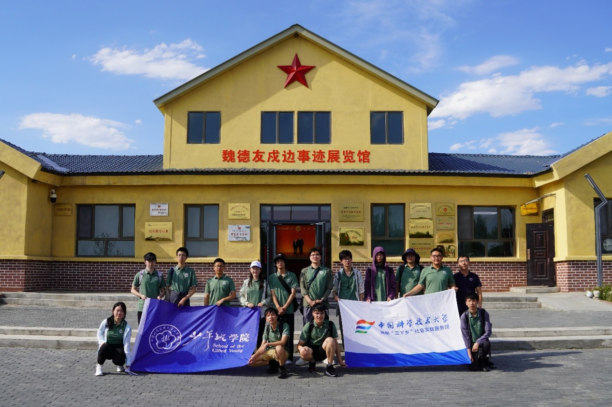
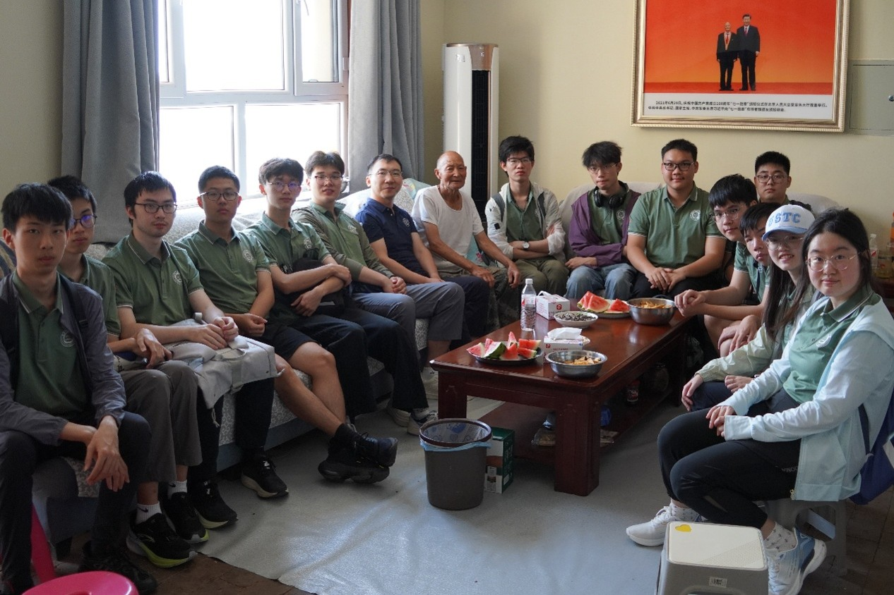
最后，我们参观了魏德友夫妇历代住所。刚开始时，他们居住在一间极其狭窄的小屋里，只有最基本的生活用品。后来，居住条件逐渐好了起来，家中多了不少家具，房子的面积也逐渐大了起来。老夫妇六十年间一共住过四间不同的住所，由小到大，由贫苦到舒适，这四件住所见证了他们在这里度过的六十年，也见证了他们永远不变的守边戍边的初心。登上住所旁的一座小哨塔向远处瞭望，可以看到国境线，另一边就是哈萨克斯坦。这就是我们祖国的边疆，是魏德友老人守护了六十年的边疆，也是我们将来要永远守护下去的边疆。
走出魏德友纪念馆，队伍开赴小白杨哨所，更近距离地感受祖国的边防建设和戍边环境。7月15日上午，实践队经过一个半小时车程来到了举国闻名的小白杨哨所。
“一棵呀小白杨，站在哨所旁——”悠扬的歌声在小白杨哨所旁响起，把戍边的故事拉回到四十多年前。1982年春，塔斯提前哨锡伯族战士程富胜探亲归队时，带来了母亲送的10棵白杨树苗种在哨所旁。由于自然环境恶劣、用水十分困难，在官兵的悉心呵护下，最终只成活了一棵。1983年，词作家梁上泉在哨所采风，受到战士日记的启发，创作了《小白杨》歌词，经曲作家士心谱曲，由歌唱家阎维文在1984年“八一”晚会上首唱这首风靡全国的《小白杨》。歌词质朴却包含深情，讲述了边防战士们数十年如一日坚守在岗位上的奉献精神。同学们站在那棵小白杨前，不由跟着旋律轻轻地哼唱起这动听的旋律，切身体会着戍边战士们那如同挺拔的白杨树一样扎根边疆的坚韧品质。
曾经的哨所经过岁月的更替，已经成为新时代的爱国教育基地。我们走近这座饱经风雪的旧哨所，远眺前方时刻坚守的新哨所，“稳疆兴疆，强边固防；扎根边防，蓬勃向上”这十六字映入眼帘，这既是戍边战士们保卫祖国许下的铮铮誓言，也是新疆人民世世代代守护家园的美好愿景。
小白杨哨所位于祖国西北边陲巴尔鲁克山脚下，原为塔斯提边防站前哨。这里的“塔斯提”在哈萨克语中意为“石头堆”。哨所建设之初，自然环境异常艰苦，“天当被来地当床"是当时的真实写照。然而，哨所官兵始终牢记党和人民的嘱托，忠诚履行卫国戍边的神圣使命。1969年6月10日，苏军在珍宝岛战斗失败后，企图在我新疆方向挑起事端。塔斯提边防站一排长李永强果断指挥、自卫还击，再振国威。硝烟散去，英雄本色不变，爱国守防依然。
历经半个多世纪风雨的小白杨已长成参天大树，傲立边关、伟岸挺拔，它见证了守防官兵忠诚守边、勇往直前的崇高境界，见证了万里边关巩固发展、日益强盛的光辉历程。历代官兵用无私奉献谱写了一曲曲卫国戍边的壮歌，用青春、热血和生命铸就了"扎根边防、蓬勃向上"的小白杨精神。小白杨歌曲千古流唱，小白杨精神代代相传。
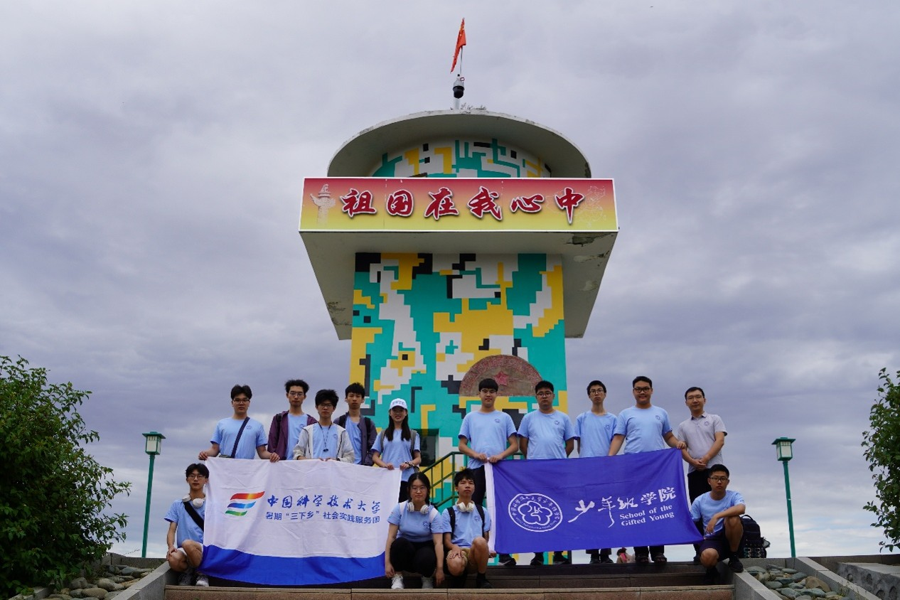
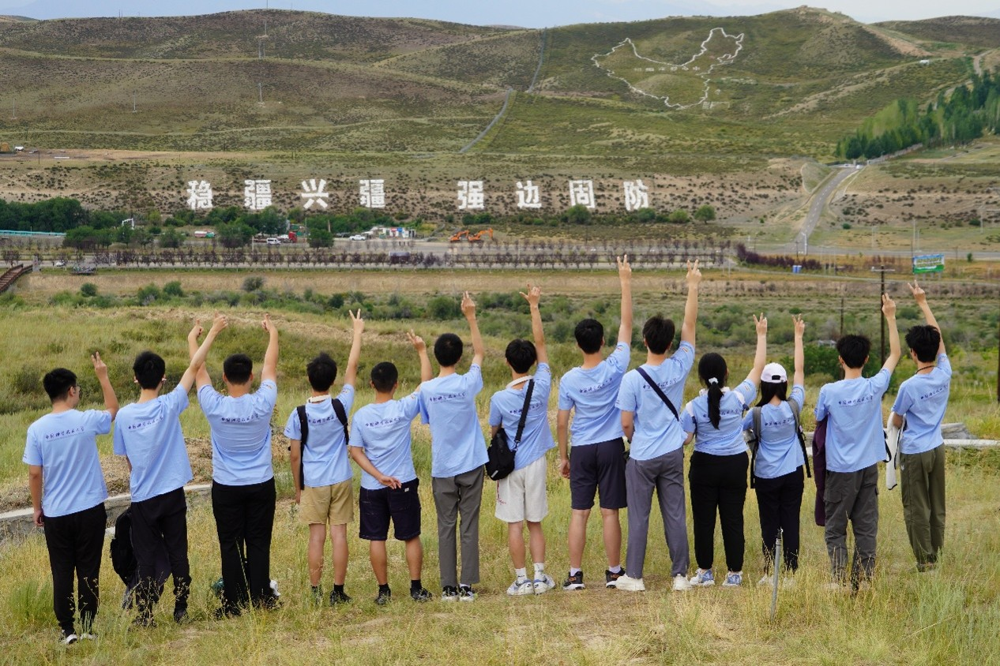
7月15日下午，实践队前往裕民县阿克铁克切村。这里是哈萨克民俗风情村落，也是目前唯一全部由哈萨克族组成的少数民族村落。讲解员为队员们详细介绍了哈萨克族的传统习俗和活动。我们首先参观了哈萨克族经典的毛毡房建筑，同学们满怀热情地尝试了哈萨克的传统服饰，留下了难忘的回忆。
村落里，我们看到了村民们开设的各种特色小店；村委会中，讲解员为我们介绍了村子的发展历程与获得的各项荣誉。这里是近年来裕民县江格斯乡全面推动乡村振兴的一个缩影。基层建设者们始终不忘初心、牢记使命，与时俱进、抢抓机遇，围绕乡村振兴战略，加强基层社会治理，积极引领服务群众，推动各项工作稳步向前发展，切实增强了阿克铁克切广大群众的获得感、幸福感、安全感。
稍作中转，实践队去往江格斯乡农科智乐园。这里有着上世纪各个年代的复原旧址，生动体现了那个年代人民的生活习惯与时代变迁。 在这里，队员们看到了过去戍边战士们住过的地窝子。1954年，新疆生产建设兵团成立，他们承担着国家赋予的屯垦戍边的重要使命，本着不与民争利的原则，战士们在天山南北兴建了大批团场、企业与新城镇，在艰难的创业初期，兵团的职工们住的都是简陋的地窝子。 年代展览馆中，群众们几十年来生活场景的变化依次呈现，反映着当时人民群众最真实的生产生活风貌。
60年代对中国来说是一个非常年代，国内遭遇了自然灾害，国外苏联撤走援助，又经三年饥荒，国民经济体制落后，财政困难。60年代的生活水平很低，吃穿条件都很紧张。很多生活消费品需凭票购买。70年代，中国的各种物质食品供给有限，经济上实行票制，桌上的食物比较简单，房屋也相对紧凑。进入80年代，中国人的生活水平有了明显提升。在复原旧址中，我们看到了居民们的餐桌开始变得丰富起来，房屋更加宽敞舒适，屋内也有了黑白电视机，房前的小院里种满了蔬菜，人民生活水平有了显著提升。90年代的生活水平进一步向好，大件的录音机与彩色电视机走进了群众家里，电视里还在放映着当年火遍大江南北的《新白娘子传奇》，可见人民在满足基础需求之后开始渴望更高的精神文化需求。
最后实践队来到了老物件展览馆，这里的展品有相当一部分由当地居民捐赠，沾染了浓浓的生活气息与时代风貌。时代发展越来越快，物品的更新迭代让老物件渐渐成为回忆。这里所展示的老物件并不是什么名贵的文物，而是伴随老一辈走过岁月的那些物品或用具，更是我们社会主义建设的来时路。
科普播星火，赤心映边疆
当陈春华教授在裕民第二小学的讲台上展开锂电池结构图时，屏幕上交错的电极材料微观影像，恰似我们此行的隐喻——在科学与边疆的交界处搭建能量桥梁。“电动汽车的安全核心在于材料创新”，陈教授以热失控模拟动画切入，剖析隔膜涂层技术与固态电解质的突破，维汉哈的小朋友们都听得如痴如醉。
这场跨越五千公里的授课，揭开了科技下乡的深层意义。教授用塔城地区冬季温度曲线图，详解锂离子迁移速率与电极界面稳定性的关系，更以亲身见闻破除专业偏见：“数年前我的学生‘励志哥’放弃国外优渥条件回国研发电池材料时，有人笑称这是‘跳进天坑’，如今我们团队专利技术已护航着百万新能源车。”当科学火种遇上边疆求知的目光，所谓的“天坑”正在化作通往未来的阶梯。
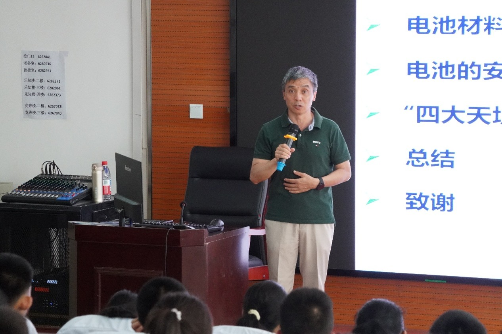
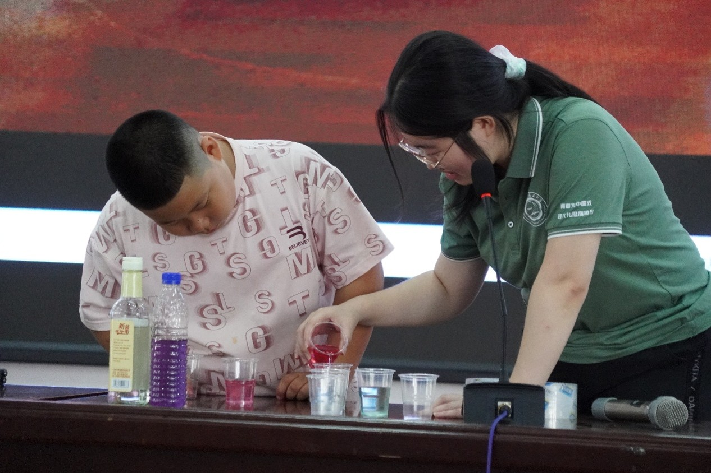
报告厅内，小学生们涌动着好奇与惊叹的星海。我们将精心准备的十四项科学实验，化作十四束璀璨的光束，投射进裕民县各族中小学生清澈的眼眸里。这不是单向的知识灌输，而是一场关于现象、原理与无限可能的奇妙对话，一次在童心中悄然播撒科学火种的“星光播种”。
普普通通的紫甘蓝汁液，遇醋变红，碰碱泛绿，在透明的试管里上演着色彩的魔法。孩子们争先恐后地将柠檬汁、小苏打水、肥皂水滴入，看着汁液瞬间变幻出彩虹般的色彩；遥控避障小车灵活穿梭，红外传感器敏锐地感知障碍，自动转向。孩子们的小手紧握遥控器，眼神专注，操控着这个小小的“钢铁伙伴”。
一节普通的干电池，两端吸附着强力的钕磁铁，当它被轻轻放入铜线圈的“隧道”中，无需任何外力，竟如被施了魔法般自动穿行；澄清的醋酸钠溶液看似平静，当一颗微小的晶核投入其中，转瞬之间，“冰晶”以惊人的速度蔓延生长，同时释放出热量，在烧杯中凝结成剔透的“热冰”雕塑；焰色里的元素光谱：喷灯火焰被各种金属盐“染”上瑰丽的色彩，钙盐的砖红、铜盐的翠绿、钾盐的浅紫目不暇接……我们解释着电子跃迁释放特定波长光子的奥秘。“和我们传统铜器一样好看的颜色！”古老的工艺与现代的光谱学，在这一刻产生了奇妙的共鸣，元素的光谱成了孩子们辨识物质“指纹”的钥匙。
十四项实验，十四束穿越现象迷雾、直抵科学本质的光。它们或静或动，或绚丽或质朴，共同编织成一片璀璨的“科普星河”。孩子们专注的眼神、恍然大悟的点头、争相提问的稚嫩声音，以及实验成功后绽放的纯真笑容，便是这片星河中最动人的光芒。我们传递的不仅是知识，更是观察世界的角度、探索未知的勇气和那份源于好奇与实证的科学精神。这些稚嫩的心田里被点亮的微光，正如巴什拜当年播下的善种，终将在未来岁月中，与今日所见的科技火种、历史传承与爱国情怀交相辉映，汇聚成照亮边疆、建设家国的磅礴力量。
步入巴什拜展览馆，展柜里泛黄的捐机证书瞬间攫住我们视线。1951年，这位哈萨克牧人变卖半数羊群捐献“巴什拜号”战机的事迹，在抗美援朝史料墙前愈显灼热。“他不仅捐了黄金、马匹”，讲解员指着粮草运输示意图，“更是为中华民族解放事业贡献自己的力量”。 当看到巴什拜大桥照片时，我不禁想起了晨间的锂电池讲座：陈教授说安全是电池的生命线，而这座桥何尝又不是牧区的生命线。更震撼的是赛马事件展板——1948年他严拒裁判谄媚，执意将冠军归还真实得主。这和中科大的精神一样，都是挺立在天地间的脊梁。
裕民博物馆的旧石器展柜前，我们触摸到八千年前华北先民迁徙的密码。“这些石斧与周口店出土物同源”，讲解员指向阿勒腾也木勒遗址地图，“证明新疆自古就是中华文明的西行驿站”。
石榴籽里的星辰大海离开展览馆时，出口旁“爱国团结”的标语与身上中科大校徽相互辉映。我们忽然读懂陈春华教授的结语：“锂电池的能量密度取决于材料，而国家的能量密度取决于青年。”
创客筑梦巢，科教启新思
7月17日，实践队从裕民县返回塔城市区。上午，实践队访问了塔城丝路创新创业基地发展有限公司。 塔城丝路创新创业基地发展有限公司于2018年1月5日成立，在各级党委、政府的鼎力扶持和企业界同仁大力支持下，成为自治区小型微型企业创新示范基地、自治区志愿专家服务站、自治区创业孵化示范基地、自治区众创空间、自治区技术转移服务机构、塔城市电子商务公共服务中心、大学生见习基地、塔城地区新的社会阶层人士联谊会等，曾获新疆维吾尔族自治区级众创空间、自治区级创业孵化示范基地、小型微型企业创新示范基地、中小企业志愿服务工作站等荣誉。
在公司工作人员的带领下，实践队参观了公司建筑并了解了公司的发展情况。一楼的咨询服务室负责解决部分创新创业中遇到的问题。二楼的咖啡吧给予不同人员之间经验交流、互帮互助的机会，交流室则提供了更加近距离的交流机会。位于三楼的就业辅导室则会为经验不足的学生或者再就业人员提供创业培训和建议，帮助更多的有志青年走上创业之路。除此之外，三楼的直播间也是丝路创新创业基地为创业人员提供的一项支持。在这里，不但有专业的直播老师讲解指导，还有往期的优秀学员的案例分享。在实践队参观的过程中，我们就在直播室看到了牛羊肉干、棉花袜子、保健品、护肤品，种子等等产品，并得知这些产品都有着蒸蒸日上的销售前景。同样在三楼的绘画室为创业人员提供了放松精神、陶冶性情的机会，实践队在这里看到了出自不同人之手的绘画、木雕等作品，颇有艺术氛围。
最后，在实践队离开之前，我们了解到了塔城丝路创新创业基地孵化的优秀案例——新疆瑞蜂源蜂业有限公司。新疆瑞蜂源蜂业有限公司成立于2018年5月14日，注册资本金壹仟万元人民币。地址为新疆塔城地区裕民县巴尔鲁克东。公司采用国外先进理念，建成全国规模最大的集蜜蜂养殖、红花成熟蜂蜜加工、销售为一体的生产企业目前已建立了6个蜜蜂养殖基地，1个中转加工基地，6000蜂箱。该公司于2024年向新疆高新技术企业主管部门申请，并成功获得国家“高新技术企业”认定。
新疆瑞蜂源蜂业有限公司作为塔城丝路创新创业基地成功孵化的企业，正是“大众创业，万众创新”政策下的生动实践成果，其发展彰显了创新引领发展的强大力量。在“一带一路”这一国家级顶层合作倡议的大背景下，塔城凭借独特的地理位置，成为了连接中国与中亚、西亚等地区的重要节点，为创新创业带来了前所未有的机遇。
丝绸之路创新创业基地的面积不大，小小众创空间却蕴含着无限的希望与可能，酝酿着无尽的未来与机遇。科技是第一生产力，创新是引领发展的第一动力。创新创业时代浪潮势不可挡，国家鼓励通过政策扶持、资金支持、平台搭建等多种方式，激发全社会的创新活力和创造潜能。许许多多像塔城一样的城市正奔跑前进，创新创业成果在祖国的大江南北开花结果，大众创业万众创新的时代号角催人奋进。
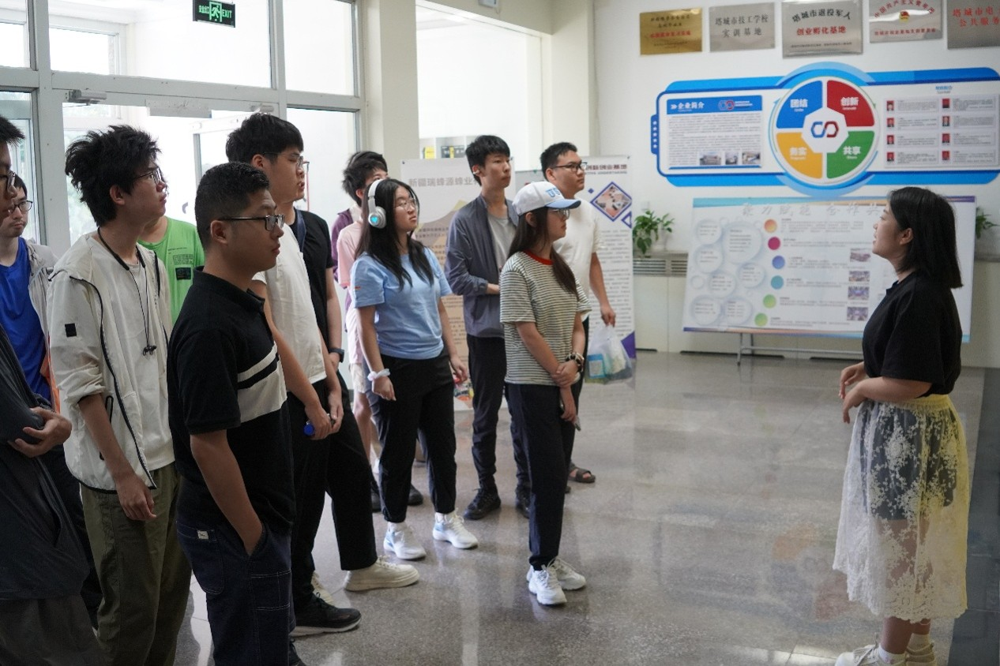
活动伊始，中国科学技术大学化学与材料科学学院的陈春华教授以《电动汽车安全吗？聊聊锂电池》为主题，开启了这场知识之旅。考虑到受众为高中生，陈教授精心准备了更加深入与专业的讲座内容。他从各种电池技术的发展历史娓娓道来，带领同学们穿越时空，见证电池技术从萌芽到蓬勃发展的历程。在讲述锂离子电池的发展演进时，陈教授深入浅出，将复杂的科学原理用生动的实例和通俗易懂的语言进行阐释。同学们沉浸其中，仿佛置身于科技创新的浪潮之中，深刻感受到科技发展的巨大魅力与潜力。
习近平总书记多次强调，当今世界科技革命和产业变革方兴未艾，我们要增强使命感，把创新作为最大政策，奋起直追、迎头赶上。中国科学技术大学始终牢记总书记的嘱托，在科研与教育领域不断创新突破。陈教授在讲座中也提及总书记对科大的重视，这让同学们深刻认识到科技对于国家发展的重要性，也对中国科学技术大学这所高校充满了向往与敬意。
不仅如此，陈教授还详细介绍了中国科学技术大学的优势。学校在前沿科学和高新技术领域成果斐然，自建校以来，秉持“科教报国、追求卓越”的初心使命，在人才培养和科技创新方面成绩卓著。其在量子科技、人工智能、材料科学等多个领域处于国内乃至国际领先地位，为国家现代化建设输送了大量顶尖人才。此外，教授也分享了学校的保研政策及招生政策，为有意愿报考的同学提供了重要信息。
随后，潘磊老师分享他的成长经历。潘老师生动地讲述了自己丰富多彩的大学生活经历，那些奋斗的日夜、探索的旅程以及收获的喜悦，都让同学们对大学生活充满了憧憬。潘老师还毫无保留地分享了他的心得体会，并结合自身经验，对新疆塔城的同学们提出了宝贵建议。他鼓励同学们珍惜时光，努力学习知识，提升自身能力，勇敢地追求自己的梦想。潘老师更是和同学们分享学习了总书记对科大的期望，激励着同学们树立远大志向，努力向这所优秀的高校迈进。
在最后的互动环节，队员们与同学们分组进行交流。同学们热情高涨，积极踊跃地提出了许多问题，涵盖了学科知识、大学生活、未来职业规划等多个方面。队员们耐心细致地一一解答，现场气氛热烈而融洽。通过这次交流，同学们心中的疑惑得到了解答，对未来的方向也更加明晰。
此次活动，不仅传播了专业的科学知识，弘扬了科大的特色与精神，更在同学们心中种下了科技创新的种子，激励着他们努力学习，肩负起时代赋予的责任，为实现中华民族伟大复兴的中国梦贡献力量。
口岸连丝路，文脉润童心
7月18日，队伍早早集合，驱车前往巴克图口岸。护栏内外，一辆辆满载着农产品的卡车正等待着边检过境。塔城巴克图口岸是中欧铁路通道的重要枢纽，是丝绸之路的重要一环，是中哈友谊的重要见证。毛织、呢绒、铁制品、烈酒、香皂……不同民族的友谊在此凝聚，习俗在此碰撞，文化在此交汇。绿色通道下，一辆辆货车运载着一批批货物，也承载着一粒粒希望，经过这个口岸，前往五洲四海，把商品送往千家万户。
在巴克图口岸展览馆中，讲解员首先展示了经过塔城巴克图口岸的丝绸之路建设情况，并介绍了接下来的丝绸之路战略的发展趋势，接下来讲解了塔城的发展历程：从清朝开始就作为丝绸之路上的重要贸易口岸，到20世纪成为中苏的重要贸易口岸，而2013年后建立起了进出口货物快速通关“绿色通道”，塔城成为丝绸之路中越来越重要的一环。讲解员还介绍了塔城市也是一条“红色通道”：东北抗日义勇军在这里返回国内；陈云，滕代远等共产主义领导人在这里从苏联回国；巴克图口岸在抗日时期更是苏联援助物资的重要通道。
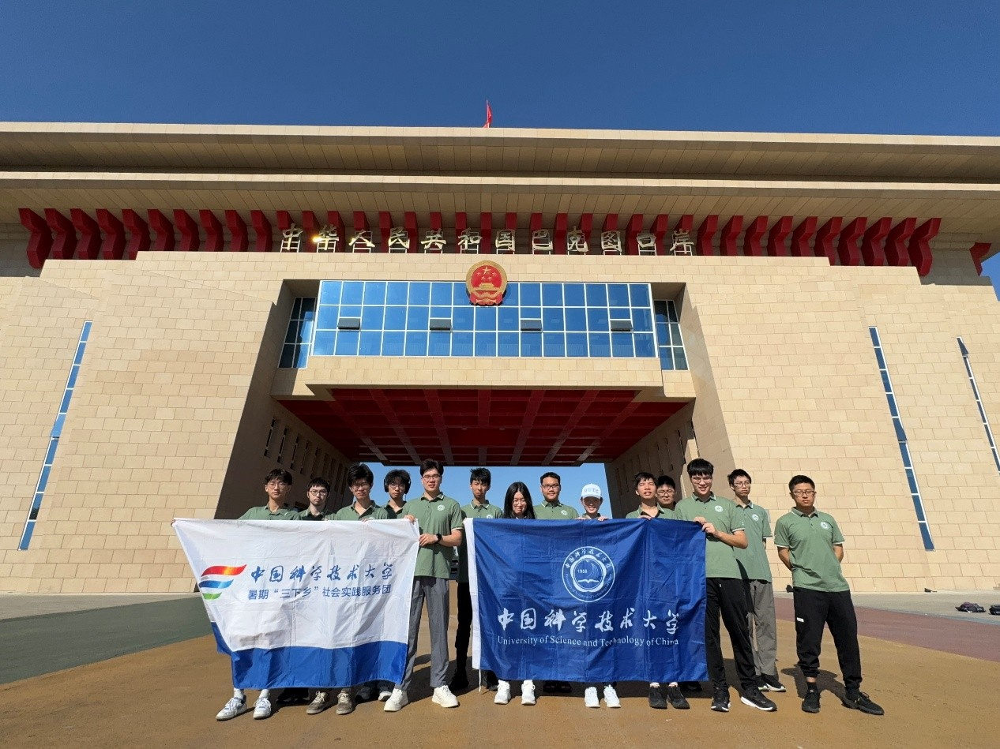
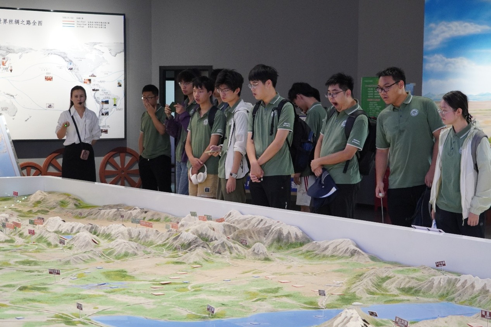
接下来讲解员展示了塔城在新时代的新发展历程。据悉，2020年12月，国务院批复设立新疆塔城重点开发开放试验区（以下简称试验区），成为全国第九个、西北地区第一个沿边重点开发开放试验区，经济发展也由此持续增速。十八大以来，塔城市聚焦乡村振兴，突出农业增效，绘就农村繁荣新画卷；聚焦发展动能，突出产业升级，驱动高质量发展新引擎，以“四园”建设为重点，基础设施投入达3.5亿元，33家企业入驻，规模以上企业新增2家、达13家，产业集聚效应逐步显现；聚焦口岸发展，突出内外联动，拓展对外贸易新局面。边民互市贸易呈现良好态势，新增7家进口落地加工企业，备案21家边民合作社；进口大宗商品14万吨，交易额6.4亿元、增长46%，边民收益600余万元，创历史新高，交易量、货值、增速稳居全疆首位；聚焦招商引资，突出项目建设，汇聚跨越式发展新动能；聚焦重点环节，突出深化改革，赋能重点领域实现新突破；聚焦城市更新，突出品质提升，塑造中心城市新面貌。在巴克图口岸，同学们了解了口岸经济，增强了对于巴克图口岸以及塔城市的认识。
离开口岸，下一站是手风琴博物馆。这是国内手风琴收藏最多的博物馆，法国，白俄罗斯，乌克兰，中国，德国……数不清的文化，道不尽的历史，齐聚在此，浓缩在一台台精致或沧桑的手风琴中，见证时代变迁，诉说艺术永恒。塔城市手风琴文化展馆位于塔城地区新时代文明实践中心一楼，展馆面积为2000余平米，截至目前是全国收藏品种和种类最多最全的手风琴馆。展馆内藏有中国、俄罗斯、德国、意大利、乌克兰等10个国家1000余架不同品牌的手风琴，其中最古老的一架纯手工制作的手风琴已超过160年的历史。展馆中陈列的手风琴绝大部分为文物，很多展品在国内外也非常罕见，具有一定的历史和学术研究价值。通过对不同国家不同品牌手风琴的展示，为让更多的人了解手风琴文化的历史，增强了民间传統文化的宣传力和影响力。
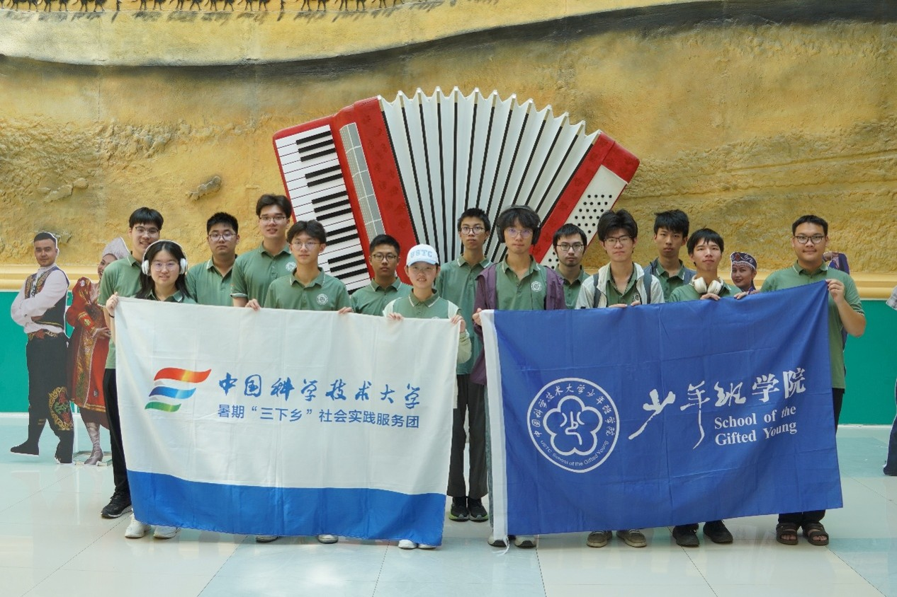
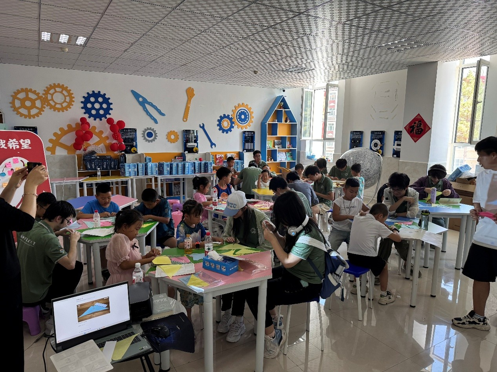
在2016年，塔城市举办了“新疆塔城手风琴艺术节”活动，并刷新了7517人最大规模手风琴合奏吉尼斯世界纪录。在2023年8月19日塔城市通过五国十城、线上加线下的方式挑战了“上海大世界吉尼斯纪录”，有效人数是4528人。同年荣获上海大世界基尼斯“中国最大手风琴博物馆”称号，并加入了国际手风琴联盟成为了成员单位，中国音乐家协会手风琴学会授予塔城“中国手风琴之城”的荣誉称号。通过在这里的参观访问，同学们加强了对手风琴的了解，并感受到塔城文化事业的繁荣。
下午，队伍来到当地第五小学开展“红领巾”主题活动，和小朋友们一同体验校内科技馆与消防安全教育馆。这里的场馆充满乐趣，生动地为小朋友们展现科学的魅力与安全的意识。展馆一楼为科普馆，有VR视觉体验，用动滑轮“自己拉自己”等生动有趣的科普项目；展馆三楼为消防安全教育馆，在这里有各种消防服装，灭火器的种类，安全标识的展示，还展示了如何进行心肺复苏，如何应对地震等其他安全知识。在展馆二楼，同学们还有幸和小朋友们共同上了一节折纸课。看着一双双充满好奇、纯真无邪的眼睛，大家便明白，这是一座充满未来，充满希望的城市。
小院升红旗，红楼述春秋
2025年7月19日早晨，中国科学技术大学新疆实践队来到沙勒克江·依明小院爱国主义教育基地参加活动，小院门口两侧是塔城地区爱国主义教育基地，民族团结进步教育基地等奖状，展示出此地的非凡意义，旁边的墙上是“石榴花开籽籽同心”，“各民族像石榴籽一样紧紧抱在一起”这样的标语，强调着民族团结的重要性。院内到处可见随风飘扬的五星红旗，其中最为引人注目的是一根高耸的旗杆，以及旗杆上鲜艳的红旗在风中舒展。
随后，我们实践队见到了沙勒克江·依明老人，在相互热情问候之后，老人开始带领实践队进行升旗活动，他语重心长地告诉我们，他十几年来坚持升旗，有三个原因，一是要感恩党和国家，二是要牢记民族团结，三是要在人们心中埋下红色的种子。
老人说，改革开放之前，人们生活艰苦，物质财富匮乏，是党的领导下全国人民不断奋斗才有了今天富足的生活，我们应当感恩党和国家，热爱祖国，拥护中国共产党；同时，红旗是由烈士的鲜血染红，代表着无数为祖国抛头颅洒热血的无私奉献的人，是中国的象征，是中国人民的精神寄托，在红旗下，各族人民应当牢记这来之不易的和平，坚持民族团结；之后，老人说，在党的领导下，在中国特色社会主义建设中，每个人都有自己的位置，有自己该做的事情，青少年作为祖国的希望，要让热爱祖国深入心灵，在心中埋下红色的种子，之后不断汲取营养，生根发芽，为国家做出贡献，当栋梁之材。听完老人语重心长的教诲，我们便开始了升旗仪式，在国歌声中，在场的所有人目送国旗缓缓升上顶部，之后，我们在《歌唱祖国》的旋律中挥舞手中的红旗，回味着老人的教导，感受着自身与祖国的联系。
升旗活动结束后，我们前往二楼展厅，在这里我们了解了沙勒克江·依明老人的故事，他坚决拥护党的领导，谴责2009年乌鲁木齐的“7·5”事件，并在同年10月1日首次在自家小院升起了五星红旗，自此之后，每逢重大节日，他都会组织身边的热进行升旗，他的行动感动了身边更多的人爱党爱国，为民族团结做出了不可磨灭的贡献，展厅内还陈列着老人获得的荣誉，老人在各个场合的合照，国旗，奖章等具有丰富意义的物品，我们在展厅中感受着老人的爱国主义情怀，发自内心地感到敬佩与感动。
在拜访完沙勒克江小院后，实践队前往塔城市地标性建筑与文化殿堂——红楼博物馆进行参观。这座承载着浓厚历史气息的建筑为实践队开启了一扇深入了解祖国西北边疆沧桑巨变的窗口。
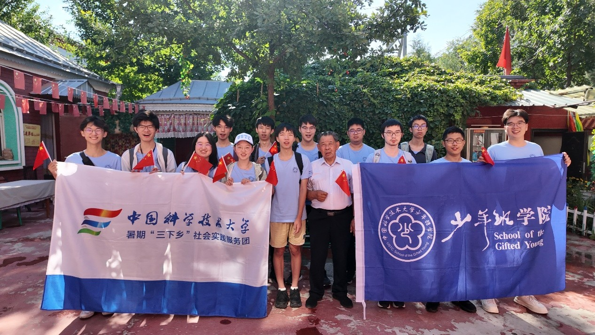
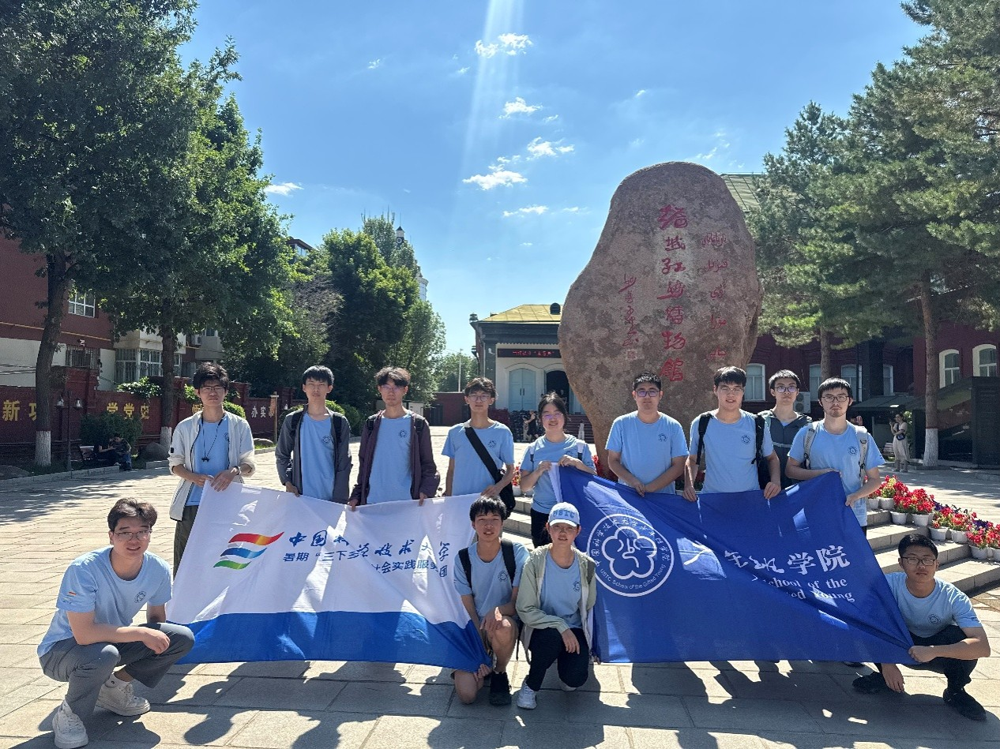
红楼博物馆是一座标志性的俄式建筑，由俄国喀山塔塔尔族商人热玛赞·坎尼雪夫于1910年开始建造，1914年建成。建筑占地面积4390平方米，分上下两层，上层以走廊分为二，—面房间较大，用来做生意，一面房间较小，用来居住，共有16个房间。天棚地板、铁皮房顶、门框窗棂均砌有图案。临街的墙面呈铁锈红色，故人们称之为红楼。房顶为绿色，具有俄罗斯建筑风格。红楼交付使用后，热玛赞·坎尼雪夫在这里经营大宗土产购销和对俄进出口贸易，成为当时塔城的商贸中心，连乌鲁木齐也有商号来此开设协办机构。2006年初，地委、行署决定投资1000余万元，在院内仿照原红楼新建了一座具有俄式风格红楼的俄式建筑风格，使新旧楼风格—致，浑然—体，蔚为大观，并正式更名为塔城地区博物馆。
步入博物馆大门，厚重的历史画卷在实践队面前徐徐展开。博物馆展示了从石器时代到民国时期的数千件藏品，从展柜中沉睡的古老游牧民族青铜箭镞、斑斓彩陶，到丝绸之路上驼铃叮当、商旅往来的复原场景，令实践队凝神驻足。当目光触及近代戍边军民在严酷环境中使用的简陋农具与生活器物，一段跨越千年的边疆开拓史变得具体可感。
在博物馆中，最令人印象深刻的是小学生讲解员。这些小学生虽然年龄不大，面对参观者却丝毫没有慌张，熟练地讲解着自己负责展区的一件件历史文物。从他们的讲解中，实践队感受到下一代文化传承的希望。
随后，实践队参观了位于地下的临时展区。这片展区展示了近代塔城地区的大量珍贵照片，将近代塔城地区的奋斗史化作实体在实践队眼前铺开。 这次塔城红楼博物馆的参观进一步加深了实践队对于塔城地区历史与文化的了解，也令实践队队员深刻感受到塔城标志性的俄式建筑的奇特与美丽。
青春赴边陲，建功在新疆
数日的塔城之行，如同一幅幅浓墨重彩的画卷，在我们心中徐徐展开，每一个场景都镌刻着成长与感悟，每一段经历都凝聚着对这片土地的深情。
从魏德友老人六十年如一日的戍边坚守，到小白杨哨所见证的国防力量，我们深刻体会到“稳疆兴疆，强边固防”的千钧分量，明白守边戍边是边疆稳定、国家安宁的基石；从阿克铁克切村的乡村振兴成果，到江格斯乡农科智乐园展现的时代变迁，我们看到了共同富裕的美好图景在边疆落地生根，基层建设者们用实干绘就了农村繁荣的新画卷；在哈萨克族民俗村落的探访、手风琴博物馆的参观中，各民族文化如同五彩斑斓的丝线，交织出民族团结的绚丽锦缎，让我们深知文化交融是凝聚人心、汇聚力量的纽带；红楼博物馆里的历史遗存、裕民博物馆中的文明印记，诉说着边疆与祖国血脉相连的悠久历史，彰显了文化生态文明建设对于传承中华文脉的重要意义；塔城丝路创新创业基地的蓬勃发展、瑞蜂源蜂业的成功孵化，展现了创新创业为边疆经济注入的强劲动力，印证了创新是引领发展的第一动力；陈春华教授的科普讲座、与塔城学子的深入交流，让科教兴国、人才强国的理念深入人心，也让我们更加坚定了用科技服务社会、以知识报效祖国的信念。
一路走来，无论是戍边老人的赤子之心，还是各族群众的团结互助，亦或是基层建设者的奋斗身影，都在诠释着自立自强、爱国奉献的深刻内涵。作为新时代的青年，我们深刻认识到，个人的成长与命运早已与祖国的发展、民族的复兴紧密相连。塔城的实践让我们明白，中国式现代化的实现，需要每一个人的努力与担当。我们将带着在这片土地上汲取的精神养分，牢记嘱托，坚定信念，把爱国情、强国志、报国行统一起来，在各自的领域刻苦钻研、奋发有为，以实际行动为中华民族伟大复兴的中国梦贡献青春力量，让青春在为祖国、为人民的奉献中焕发出绚丽光彩！